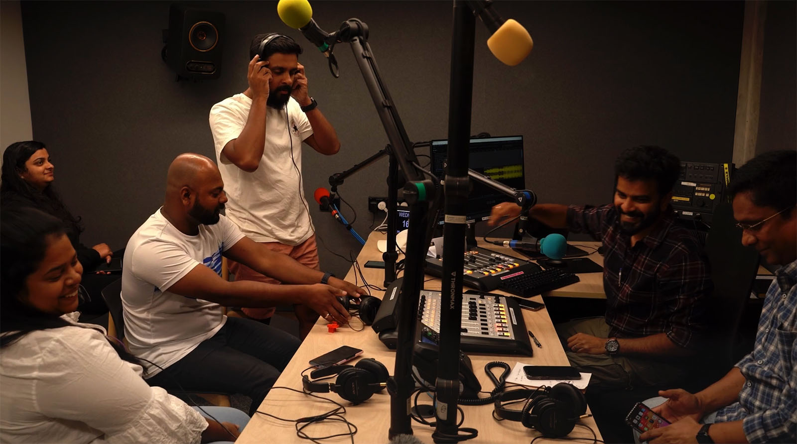

Réalisatrice documentaire · Nouvelle-Zélande – France
Blandine
Massiet du Biest
© SRLB Photography
Réalisatrice
He aha te mea nui o te ao ?
He tangata, he tangata, he tangata.
Qu'y a-t-il de plus important au monde ? Les gens, les gens, les gens.
J'aime ce célèbre proverbe maori parce qu'il s'applique parfaitement aux documentaires tels que je les aime. Je suis intriguée par les biais de nos sociétés mais je me passionne aussi pour l'Art sur lequel j'aime poser un regard aimant et irrévérencieux à la fois.
Pour moi, chaque film est comme une histoire d'amour… qui finit bien. C'est un espace privilégié où celle qui filme voit l'autre avec toute son attention et sa complète implication, et où celui ou celle qui est filmé donne sa confiance et partage ce qu'il y a d'essentiel en lui ou en elle.
En espérant que le résultat de cette alchimie touche le spectateur et ouvre de nouveaux horizons.

Filmographie

Frances Hodgkins
Anything but a Still Life
Une vision biographique et esthétique de la première artiste avant-gardiste en Nouvelle-Zélande — projeté dans des cinémas aux quatre coins du pays et dans des festivals en France et en Angleterre.
Découvrir →
Bring Your Kete